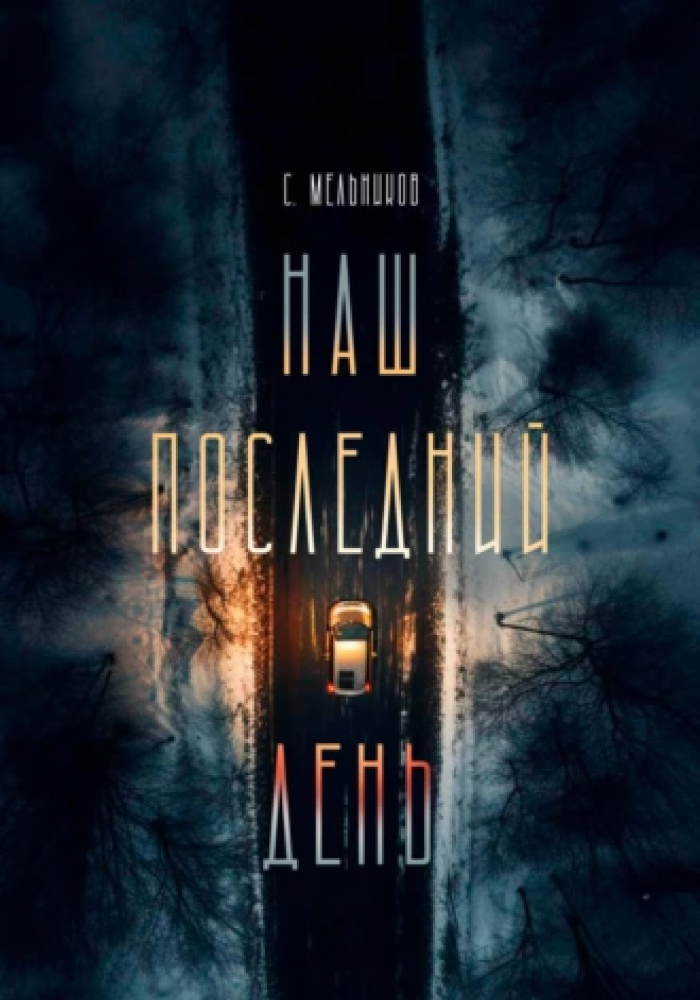

Увлекательное путешествие в разум и сердце

Наш последний день
Остросюжетные любовные романы, Современная русская литература
Описание
Что ты будешь делать, если узнаешь, что твой город вот-вот погибнет? Спрячешься в бомбоубежище? Мы взяли кота и помчались прочь от Москвы. Ракета с ядерной боеголовкой за минуту пролетает четыреста километров. Мой "форд" по нечищенной трассе — не больше двух. Есть ли шансы победить в этой гонке? Проиграю — сгорим заживо.
-
Объем:17 стр.
-
Возрастное ограничение:16+
-
Дата написания:2023 г.
-
видеовариант
-
аудиокнига